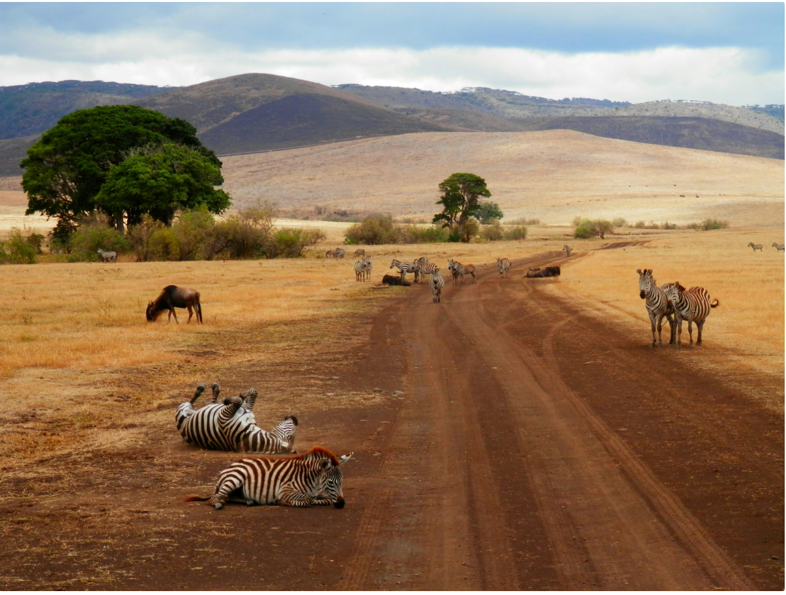
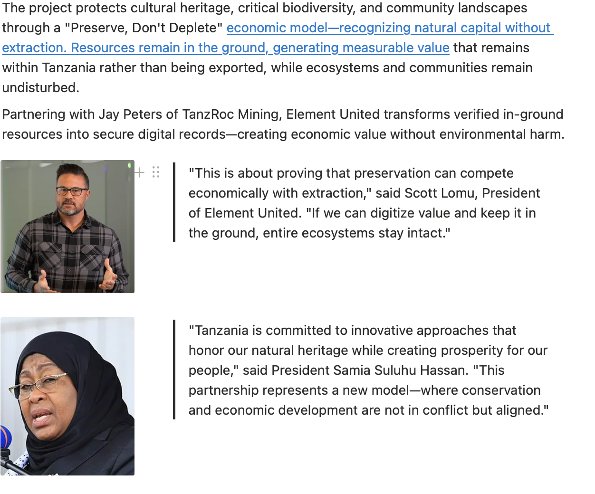
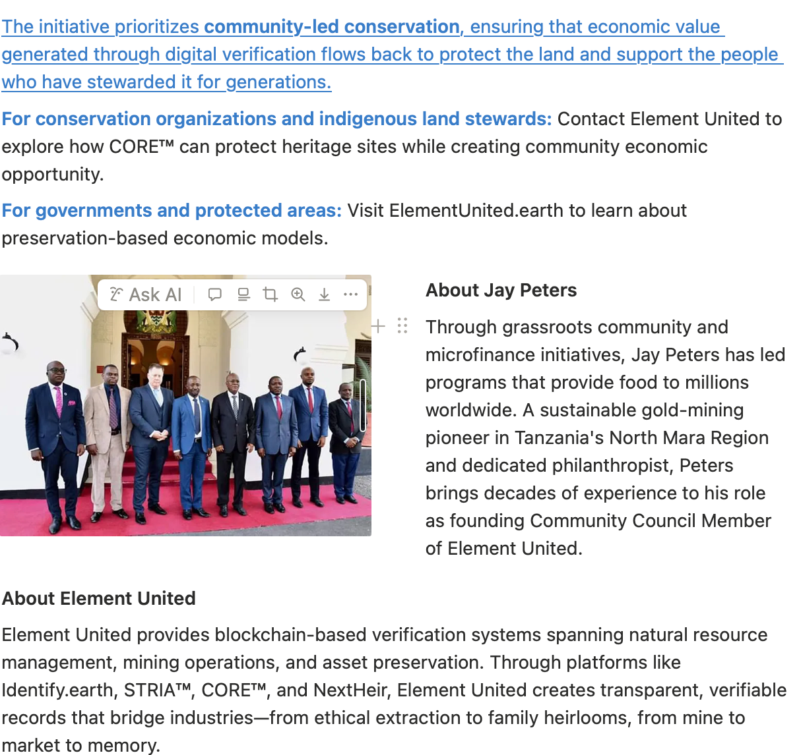

Element United Partners with Tanzania to Protect UNESCO World Heritage Site Through Digital Asset Verification
CORE™ platform creates preservation-based economic model for Serengeti, ensuring community benefit and preventing extraction
FOR IMMEDIATE RELEASE
Dar es Salaam, Tanzania – November 2025
Element United today announced a groundbreaking partnership with Tanzania following a meeting between Element United President Scott Lomu and President Samia Suluhu Hassan to advance an unprecedented initiative: protecting the Serengeti through digital verification of in-ground mineral assets via the CORE™ In-Ground Asset Exchange.
The project protects cultural heritage, critical biodiversity, and community landscapes through a "Preserve, Don't Deplete" economic model—recognizing natural capital without extraction. Resources remain in the ground, generating measurable value that remains within Tanzania rather than being exported, while ecosystems and communities remain undisturbed.
Partnering with Jay Peters of TanzRoc Mining, Element United transforms verified in-ground resources into secure digital records—creating economic value without environmental harm.
"This is about proving that preservation can compete economically with extraction," said Scott Lomu, President of Element United. "If we can digitize value and keep it in the ground, entire ecosystems stay intact."
"Tanzania is committed to innovative approaches that honor our natural heritage while creating prosperity for our people," said President Samia Suluhu Hassan. "This partnership represents a new model—where conservation and economic development are not in conflict but aligned."
The initiative prioritizes community-led conservation, ensuring that economic value generated through digital verification flows back to protect the land and support the people who have stewarded it for generations.
For Conservation Organizations and Indigenous Land Stewards
Contact Element United to explore how CORE™ can protect heritage sites while creating community economic opportunity.
For Governments and Protected Areas
Visit ElementUnited.earth to learn about preservation-based economic models.

About Jay Peters
Through grassroots community and microfinance initiatives, Jay Peters has led programs that provide food to millions worldwide. A sustainable gold-mining pioneer in Tanzania's North Mara Region and dedicated philanthropist, Peters brings decades of experience to his role as founding Community Council Member of Element United.
About Element United
Element United provides blockchain-based verification systems spanning natural resource management, mining operations, and asset preservation. Through platforms like Identify.earth, STRIA™, CORE™, and NextHeir, Element United creates transparent, verifiable records that bridge industries—from ethical extraction to family heirlooms, from mine to market to memory.
Every element tells a story. Element United built the system that maps them all—making trust infrastructure.
Media Contact
Element United
Press Relations
press@elementunited.com